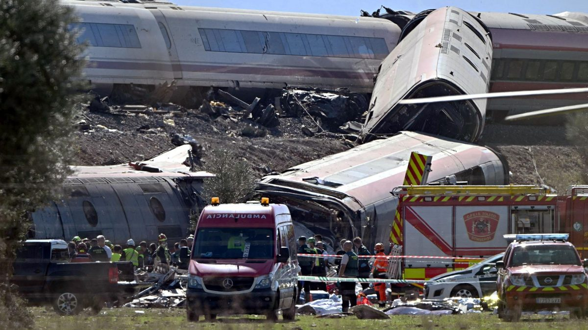
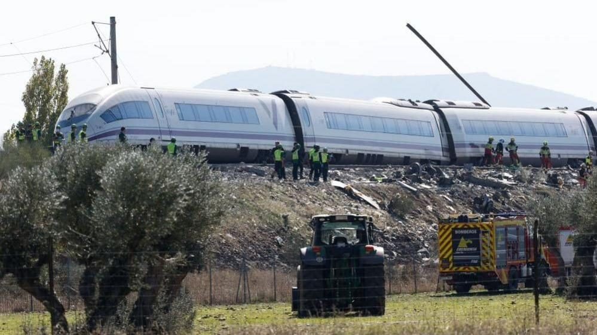
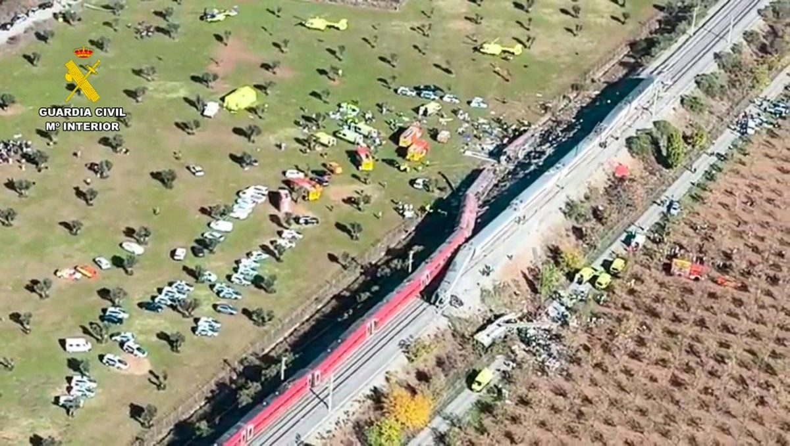
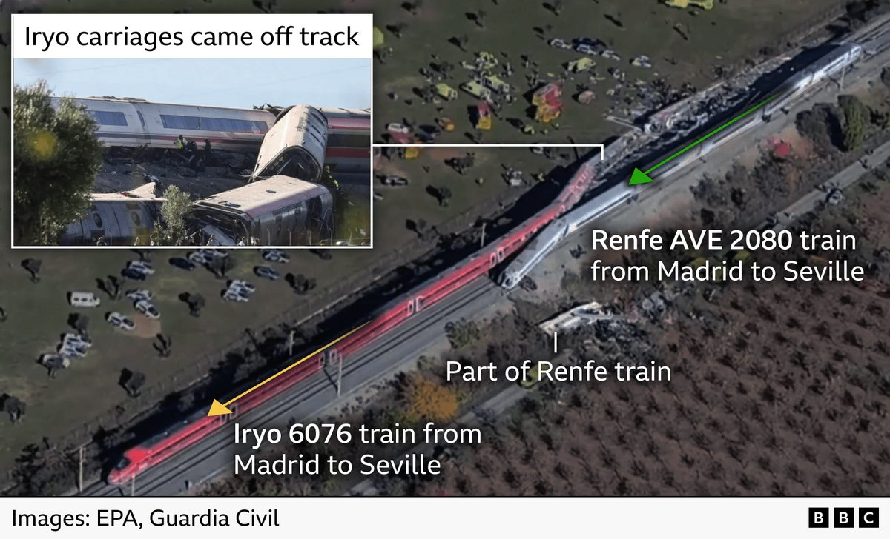

Togulykke i Spanien: Mindst 68 dræbt, da højhastighedstog kørte ind i holdende tog
Det er Spaniens værste togulykke i 13 år og landets anden store togulykke i år.




Et Renfe-tog på vej fra Madrid til Sevilla med 397 passagerer kørte onsdag lidt efter klokken 9 bagind i et tog fra selskabet Iryo med 147 passagerer, der holdt stille på sporet. Ulykken skete omkring 140 km syd for Madrid, mellem Mora og Orgaz i Toledo-provinsen. Snesevis er såret.
Ifølge transportminister Óscar Puente holdt Iryo-toget stille på grund af en computerfejl. Det døgnbemandede kontrolcenter i Madrid traf så en »uforklarlig« beslutning om at lade togene køre igen uden hastighedsbegrænsning. Ministeren kalder det en computerfejl efterfulgt af en menneskelig fejl.
En af vognene brød i brand, og en skinne blev boret gennem en anden vogn.
Kilde: BBC · Læs mere →